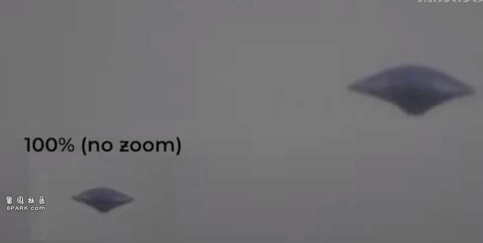
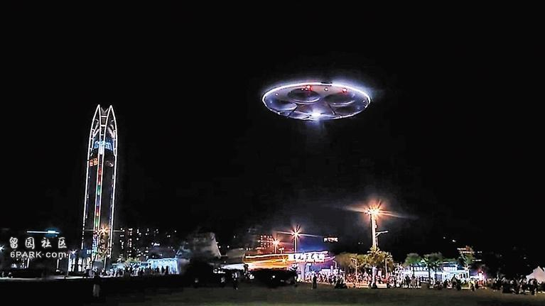
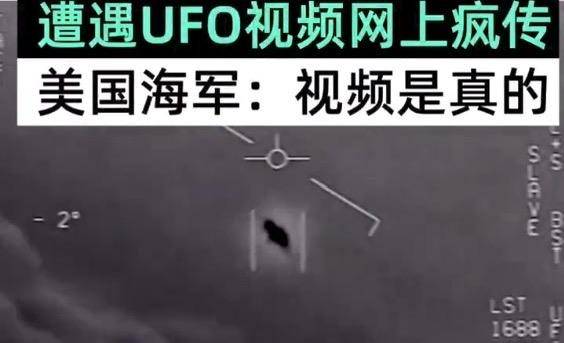
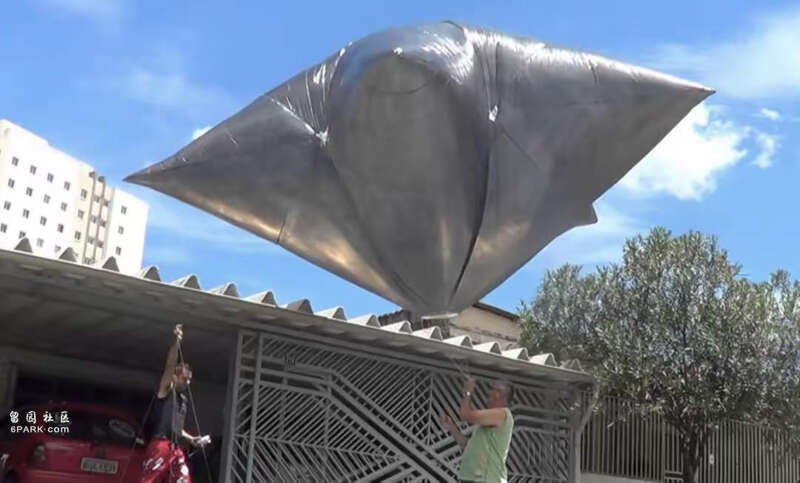

不久前网上出现了两段拍摄于巴西南部库里蒂巴市的视频，引起很多人的关注。可能很多网友都看到了相关的视频，通过视频可以看到不明飞行物飞越城市上空的场景，与以往的UFO视频完全不同，此次拍摄记录的不明飞行物看起来较为清晰！
通过放大画面来看，这个不明物体黑色呈现三角形状，根据目击者的描述它的飞行动作非常诡异。
据悉巴西南部城市上空出现不明飞行物的时间是在7月21日，视频拍摄者先是看到了黄昏时分天空中的一个小黑点，并且这个小黑点起初是不移动的。
通过拉近镜头可以看到不明物体的真实形状，呈现出三角形，并且根据目击者的描述这个不明物体貌似还有类似于底盘一样的起落架，但很快便收起来消失了！视频拍摄者回忆，这个不明物体很可能是刚刚起飞的状态，并且还悬浮了一段时间！

天空中出现的不明物体其实最可能的还是人类的飞行器，但是巴西上空出现的神秘物体，从它的飞行状态以及自身的形态还真不太像是人造物体！
首先通过放大画面去看，根本看不到螺旋桨之类的物体存在，因此不太可能是很多网友猜测的无人机之类，并且三角形的飞行器本身就非常奇怪！不仅如此，这个不明物体最开始还悬浮了一段时间，保持着一个姿态不动，这本身就非常诡异！
很多网友把巴西出现这个不明飞行物称之为“史上最清晰的UFO”，的确如此通过两段视频来看该不明物体的形状的确是非常清晰，仔细看一下这不就是大家常说的外星人飞碟吗？

对于不明飞行物视频在网上的传播，该国的空军也在第一时间给予了关注并且回应，首先第一点这两段视频的真假暂时无法核对，同时巴西空军的发言人也针对不明飞行物视频给出了几种可能性，但也并未做过多解释！
其实可以看到虽然巴西空军并没有解释这个问题，但是从他们的态度来看并未全盘否定！
其实关于UFO事件，是上个世纪八九十年代火爆的话题，但以往大家讨论不明飞行物或者UFO都是怎么夸张怎么来，不是科学的问题，而更加接近于玄幻故事。但是随着发展，大家的看法不同了，这也说明人们开始重新认识这个问题。
美国海军曾在2017年12月至2018年3月拍摄过多段不明飞行物视频，在红外摄像机记录下的画面中，可以看到一个“小黑点”快速地移动，速度并不是最关键的，让人震惊的是“小黑点”的移动方式，根本不是人类飞行器可以做出来的动作。
它会在空中悬停、快速移动，同时还可能以夸张的姿态掉转方向！
对于这三段在网上流传很广的视频已经被美国五角大楼认领，确认是美国海军拍摄记录下来的，并且在公布之前秘密立项研究了5年之久，但是并没有结论，太过于诡异！

以往大家讨论的UFO事件普遍来自于民间，也参杂了各种水分。但自从2020年以后，美国海军确认拍摄了UFO视频之后，问题开始变得不简单了！
美国已经多次举行听证会讨论UAP的问题，这是美国人给UFO起的新名字，翻译过来就是空中不明现象、差不多也就是换汤不换药，之所以不继续用UFO这个名字，主要是它带着太多的神秘色彩。每当提到UFO，大家最先联想到的一定是外星人！
NASA也公开进行过关于不明飞行物事件的研究项目，邀请了专业的科学家团队，但最终也是搅屎棍，并未得出确定的结论。NASA认为没有明确证据表面，地球上发生的不明飞行物事件和地外生命有关联，当然也不排除这种可能性，但至少现有的证据不足！
因此说，类似于巴西上空出现的不明飞行物事件，多出现一些也是可以的，毕竟是有利于我们有更多的发现！
当然，所谓的不明飞行物事件，大部分还是和人类的飞行器有关系，当然还有自然现象的误认，或者是神秘未知的生物。
针对巴西上空这个清晰的不明飞行物，一些网友也有自己的看法，他们认为这只不过是一个高空气球而已，不足以大惊小怪！甚至有网友还放出了气球的照片，别说还真的挺相似！

无论如何，保持怀疑的态度去看待不明飞行物是最好的，而不是全盘否定，为了否定而否定，真相如何等着慢慢去揭晓！